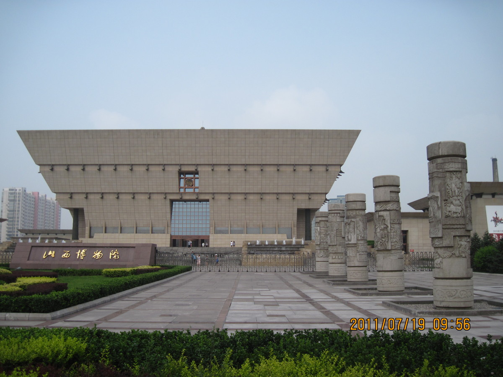

Top 3 Historic Sites in Taiyuan
Jinci Temple

Introduction
Jinci Temple, 25 kilometers southwest of Taiyuan, is one of China’s oldest and most beautiful temples—with a history dating back 3,000 years to the Western Zhou Dynasty. It was built to honor the ancestors of the Jin state, and its grounds blend natural beauty (ancient trees, ponds) with architectural gems. Highlights include the “Hall of the Holy Mother” (a Song Dynasty building with intricate wooden carvings), the “Iron Statues of the Four Ministers” (four 2.5-meter-tall iron figures from 968 AD, still free of rust), and two 3,000-year-old cypress trees (one shaped like a dragon, locals say it brings good luck). The temple’s “Fish Pond Spring” feeds clear water into ponds filled with lotus flowers, making it a peaceful spot to wander.
Best Time to Visit
Spring (April–May): Lotus buds start to bloom, and the cypress trees grow new leaves (10–18°C).
Autumn (Sept–November): Cool weather (12–20°C) and golden leaves fall around the ponds—perfect for photos.
Avoid summer afternoons (hot and humid); visit in the morning or late afternoon.
Price
80 CNY/adult, 40 CNY/students (with ID), free for kids under 1.2 meters.
Guide service: 150–200 CNY/1.5h (negotiable for small groups).
Twin Pagoda Temple (Yongzuo Temple)

Introduction
Twin Pagoda Temple (Yongzuo Temple) is Taiyuan’s most iconic landmark, located on a hill in the southeastern part of the city. Built in the Ming Dynasty (16th century), it’s named for its two identical 54-meter-tall brick pagodas—each with 13 stories and narrow spiral stairs leading to the top. Climb one pagoda, and you’ll get panoramic views of Taiyuan’s skyline, from modern skyscrapers to distant mountains. The temple grounds also include the “Hall of the Great Buddha” (with a 3-meter-tall bronze Buddha statue) and a garden with peony flowers (bloom in May). It’s a quiet spot to escape the city’s buzz and learn about Taiyuan’s Ming Dynasty history.
Best Time to Visit
Spring (May): Peonies in the temple garden bloom, 15–20°C.
Autumn (Sept–October): Cool weather (10–18°C), clear skies for city views.
Winter (Dec–February): Less crowded, but cold (below 0°C)—wear warm clothes if you climb the pagoda.
Price
30 CNY/adult, 15 CNY/students, free for kids under 1.2 meters.
No extra charge for climbing the pagodas.
Shanxi Museum

Introduction
Shanxi Museum, located in Taiyuan’s New District, is one of China’s top provincial museums—housing over 400,000 artifacts that span 1 million years of Shanxi’s history. Its most famous exhibits include: “Bronze Vessels of the Shang and Zhou Dynasties” (intricately carved pots used in ancient rituals), “Shanxi Porcelain” (delicate white and blue porcelain from the Song to Qing Dynasties), and “Jade Artifacts” (from simple tools to royal ornaments). The museum’s building is designed to look like a traditional Shanxi courtyard, with light-filled halls that make viewing artifacts easy. There’s also a free English audio guide (scan a QR code at the entrance) to help you understand the exhibits.
Best Time to Visit
Year-round: The museum is indoors (20–25°C) and open every day except Monday.
Morning (9–11 AM): Most exhibits are less crowded, and staff are available to answer questions.
Price
Free entry (but you need to book a ticket online 1 day in advance via the museum’s official WeChat account).
Audio guide: Free (scan QR code with your phone; requires internet).